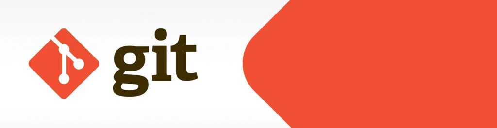

Introducció a Git¶
Al món del desenvolupament web, és crucial comptar amb eines i tècniques que permetin gestionar i col·laborar en projectes de manera eficient. En aquest article introductori, abordarem una de les eines més utilitzades a la indústria per al control de versions: Git.

L'objectiu és proporcionar una base sòlida per comprendre i aplicar Git als teus futurs projectes.
Què és Git¶
Git és un sistema de control de versions distribuït, creat el 2005 per Linus Torvalds, el creador del nucli de Linux. Des de llavors, s'ha convertit en l'eina estàndard per al control de versions a la majoria dels projectes de programari. La popularitat de Git es deu a la facilitat d'ús, robustesa i capacitat per treballar de forma descentralitzada.
Control de versions¶
El control de versions és una tècnica que permet portar un registre dels canvis realitzats en un conjunt de fitxers al llarg del temps. Amb Git, els desenvolupadors poden treballar en diferents branques d'un projecte, cadascuna amb les seves pròpies modificacions i característiques. Després aquestes branques es poden combinar (mergeix) per unificar els canvis en una sola línia de desenvolupament.
Un dels principals avantatges de Git és la seva arquitectura distribuïda. A diferència d'altres sistemes de control de versions centralitzats, cada desenvolupador té la seva pròpia còpia completa del repositori, incloent-hi tot l'historial de canvis. Això permet que els desenvolupadors treballin de forma independent i sense connexió a internet, sincronitzant els canvis amb altres repositoris quan sigui necessari.
Un repositori és una carpeta on guardarem el nostre projecte: pot ser internet o qualsevol lloc del nostre equip.
Començar a utilitzar Git¶
Per començar a utilitzar Git, cal instal·lar el programari al vostre equip i configurar la vostra identitat. Després, pots crear un nou repositori o clonar-ne un d'existent. El flux de treball bàsic de Git implica realitzar canvis als fitxers, afegir-los a l'àrea de preparació (staging), confirmar (commit) els canvis i, finalment, enviar (push) els canvis al repositori remot.
En el context del desenvolupament web en entorn client, Git és especialment útil per gestionar els canvis al codi font de les aplicacions i col·laborar amb altres desenvolupadors. Per exemple, podeu utilitzar Git per mantenir un historial dels canvis als vostres fitxers HTML, CSS i JavaScript, i col·laborar amb altres membres de l'equip en la implementació de noves característiques o la correcció d'errors.
A més, l'ecosistema de Git inclou plataformes com GitHub, GitLab i Bitbucket, que ofereixen serveis addicionals per gestionar i col·laborar en projectes de programari. Aquestes plataformes permeten crear repositoris en línia, gestionar permisos d'accés, fer revisions de codi i més.
Instal·lar git¶
Per instal·lar Git, tan sols has d'anar a aquest enllaç https://git-scm.com/downloads i seguir els passos.
Inicialitzar un repositori Git¶
Per començar a utilitzar Git en un projecte, primer cal inicialitzar un repositori. Des de la terminal, navega fins a la carpeta del projecte i executa la següent ordre:
git init
Això crearà una carpeta oculta anomenada “.git” al directori del projecte, on s'emmagatzemarà tota la informació del repositori i ja estarem a punt per començar a llançar ordres per gestionar el nostre repositori.
Ordres més habituals de Git¶
Ara que ja coneixem els avantatges de Git, hem instal·lat el programari i tenim un repositori funcionant, és hora d'aprendre com funciona i repassar les ordres més habituals amb exemples pràctics.
Afegeix fitxers a l'àrea de preparació (staging)¶
Per afegir fitxers a l'àrea de preparació, utilitzem l'ordre “git add”. Per exemple, si volem afegir un fitxer anomenat “index.html”, executem:
git afegir index.html
També és possible afegir tots els fitxers del projecte amb una sola ordre:
git add.
Confirmar canvis (commit)¶
Un cop els fitxers estiguin a l'àrea de preparació, podem confirmar els canvis realitzats amb l'ordre “git commit”. Sempre cal incloure un missatge descriptiu que expliqui els canvis realitzats:
git commit -m "Creació del fitxer index.html"
Consulteu l'historial de canvis (log)¶
Podem veure l'historial de canvis del repositori utilitzant l'ordre “git log”:
git log
Això mostrarà una llista dels commits realitzats juntament amb informació detallada, com ara l'autor, la data i el missatge del commit.
Crear i canviar a una nova branca (branch)¶
Per crear una nova branca i canviar-la, utilitzem l'ordre “git checkout” amb l'opció “-b”:
git checkout -b nova-branca
Això ens permetrà treballar a la nova branca sense afectar el codi de la branca principal (generalment anomenada “main” o “master”).
Fusionar branques (merge)¶
Quan hàgim acabat de treballar en una branca i volem unificar els canvis amb la branca principal, primer canviem a la branca principal:
git checkout main
Després, fusionem la branca que conté els canvis:
git merge nova-branca
Enviar canvis al repositori remot (push)¶
Per enviar els canvis al repositori remot, primer hem de connectar el nostre repositori local amb el remot utilitzant l'ordre “git remote”:
git remote add origin URL_DEL_REPOSITORI_REMOT
Després, enviem els canvis amb l'ordre “git push”:
git push -u origin principal
Altres ordres útils¶
Coneixent tot això ja podem treballar amb el bàsic del sistema de control de versions Git, però, és possible que vulguem realitzar algunes accions no descrites amb anterioritat. Vegem quines són algunes de les ordres que podries necessitar a partir d'aquí.
Clonar repositori¶
git clone URL_DEL_REPOSITORI_REMOT
Conèixer els fitxers modificats¶
git status
git status -s
Baixar canvis¶
git pull
Visualització de branques¶
git branch
git branch --llist
Esborrar una branca¶
git branch -d NOM_DE_LA_BRANCA
Desfer un commit¶
git revert CODI_DEL_COMMIT
Aquestes són només algunes de les ordres més bàsiques i habituals a Git. Amb el temps, aprendràs més ordres i tècniques per aprofitar al màxim aquesta poderosa eina. Recordeu sempre practicar i consultar la documentació de Git si tens dubtes. Bona sort en els teus projectes!